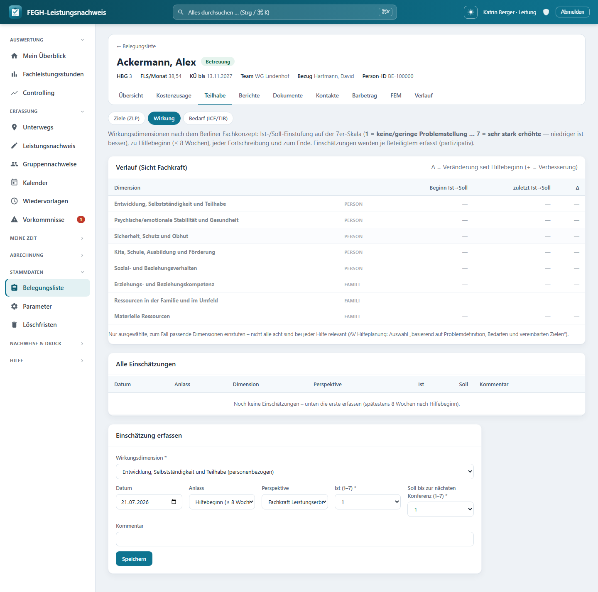

Wirkungsmessung¶

Wirkungsmessung über die Berliner acht Dimensionen.
Zu jeder Klientin kannst du die Wirkung der Hilfe dokumentieren – auf Wirkungsdimensionen, die du auf einer 7er-Skala einstufst. Die App bildet die Berliner Systematik der AV Hilfeplanung ab: Zu jeder ausgewählten Dimension hältst du einen Ist- und einen Soll-Wert fest, jeweils zu einem Anlass (Hilfebeginn, Fortschreibung, Ende) und aus einer Perspektive (partizipativ – Fachkraft, Klientin, Familie, Jugendamt/THFD). Eine Verlaufs-Matrix stellt die Entwicklung je Dimension mit einem Delta seit Hilfebeginn dar, sodass Wirksamkeit sichtbar wird.
Du erreichst die Seite über die Fallakte einer Klientin: Reiter Teilhabe → Wirkung. Daneben liegen dort die Reiter Ziele (ZLP) und Bedarf (ICF/TIB)*.
Pflicht in der Jugendhilfe seit 01.05.2026
Für Leistungen der Jugendhilfe ist die Wirkungsmessung nach der AV Hilfeplanung (Abschnitt 4) seit dem 01.05.2026 verbindlich – partizipativ und zu den Zeitpunkten Hilfebeginn (≤ 8 Wochen), jeder Fortschreibung/Hilfekonferenz und Beendigung. In der Eingliederungshilfe (EGH) ist die Zielerreichung über die Ziele der ZLP und den Informationsbericht abgebildet; die Wirkungsdimensionen kannst du dort ergänzend nutzen.
Die 7er-Skala: niedriger ist besser¶
Ist und Soll stufst du auf einer siebenstufigen Skala ein. Sie beschreibt die Höhe der Problemstellung – je niedriger, desto besser:
| Stufe | Bedeutung | Farbe in der App |
|---|---|---|
| 1 – 2 | keine / geringe Problemstellung | grün |
| 3 – 4 | leicht bis mäßig erhöht | gelb |
| 5 | deutlich erhöht | orange |
| 6 – 7 | stark bis sehr stark erhöhte Problemstellung | rot |
- Ist ist der aktuelle Zustand der Dimension zum Anlass.
- Soll ist der Zielwert bis zur nächsten Konferenz – wohin die Hilfe die Dimension entwickeln soll.
Delta lesen
In der Verlaufs-Matrix zeigt die Spalte Δ die Veränderung des Ist-Werts seit Hilfebeginn. Weil niedriger besser ist, rechnet die App Beginn − zuletzt: Ein + (grün) bedeutet Verbesserung (die Problemstellung ist gesunken), ein − (rot) eine Verschlechterung, ±0 keine Veränderung.
Die 8 Wirkungsdimensionen¶
Die Berliner Systematik kennt 8 Wirkungsdimensionen – 5 personenbezogene und 3 familienbezogene. Sie liegen als Stammdaten in der App (per Migration angelegt) und lassen sich bei Bedarf ohne Programmierung erweitern.
| Bereich | Dimensionen |
|---|---|
| personenbezogen | 5 Dimensionen rund um die leistungsberechtigte Person |
| familienbezogen | 3 Dimensionen rund um Familie / das familiäre System |
In der Auswahl siehst du zu jeder Dimension in Klammern den Bereich (personenbezogen / familienbezogen); in der Verlaufs-Matrix steht der Bereich als kurzes Kürzel neben dem Namen.
Nicht alle acht bei jeder Hilfe
Du stufst nur die zum Fall passenden Dimensionen ein – nicht bei jeder Hilfe sind alle acht relevant. Die AV Hilfeplanung verlangt eine Auswahl „basierend auf Problemdefinition, Bedarfen und vereinbarten Zielen“. Die App weist ausdrücklich darauf hin.
Anlass und Perspektive¶
Jede Einschätzung ist einem Anlass und einer Perspektive zugeordnet. So entsteht je Zeitpunkt und Beteiligtem ein eigener Datensatz – das ist die partizipative Erfassung der AV Hilfeplanung („die Einschätzungen aller Beteiligten werden erfasst“).
Anlass – wann die Einschätzung entsteht:
| Anlass | Bedeutung |
|---|---|
| Hilfebeginn (≤ 8 Wochen) | Erst-Einstufung, spätestens 8 Wochen nach Hilfebeginn |
| Fortschreibung / Hilfekonferenz | laufende Einstufung zur Fortschreibung (Vorbelegung) |
| Beendigung der Hilfe | Abschluss-Einstufung zum Ende |
Perspektive – wessen Einschätzung erfasst wird:
| Perspektive | Bedeutung |
|---|---|
| Fachkraft Leistungserbringer | eure fachliche Einschätzung (Grundlage der Verlaufs-Matrix) |
| Klient*in / junger Mensch | Selbsteinschätzung der leistungsberechtigten Person |
| Familie / Sorgeberechtigte | Einschätzung des familiären Systems |
| Fachkraft Jugendamt/THFD | Einschätzung des Kostenträgers |
Verlaufs-Matrix zeigt die Fachkraft-Sicht
Die Matrix oben (Δ seit Hilfebeginn) verdichtet ausschließlich die Werte der Perspektive Fachkraft, damit der fachliche Verlauf eine konsistente Linie hat. Alle Perspektiven zusammen findest du in der Tabelle „Alle Einschätzungen“.
Aufbau der Seite¶
Die Seite gliedert sich in drei Blöcke:
- Verlauf (Sicht Fachkraft) – die Verlaufs-Matrix: je Dimension der Beginn-Wert (Ist → Soll), der zuletzt erfasste Wert (mit Datum) und das Δ. Dimensionen ohne Werte erscheinen ausgegraut.
- Alle Einschätzungen – eine Tabelle jeder erfassten Einschätzung mit Datum, Anlass, Dimension, Perspektive, Ist, Soll und Kommentar. Hier kann die Leitung einzelne Einträge löschen (✕).
- Einschätzung erfassen – das Formular, um eine neue Einschätzung anzulegen.
Eine Einschätzung erfassen¶
Im Formular „Einschätzung erfassen“ legst du eine neue Einstufung an. Diese Felder stehen zur Verfügung:
| Feld | Pflicht | Bedeutung |
|---|---|---|
| Wirkungsdimension | ja | Auswahl aus den aktiven Dimensionen (mit Bereich in Klammern). |
| Datum | – | Datum der Einschätzung (vorbelegt mit heute). |
| Anlass | – | Hilfebeginn / Fortschreibung / Ende (Standard: Fortschreibung). |
| Perspektive | – | Wessen Sicht erfasst wird (Standard: Fachkraft). |
| Ist (1–7) | ja | aktueller Zustand auf der 7er-Skala. |
| Soll bis zur nächsten Konferenz (1–7) | ja | Zielwert auf der 7er-Skala. |
| Kommentar | – | kurze Begründung/Notiz (max. 200 Zeichen). |
Nach dem Speichern erscheint die Einschätzung sofort in „Alle Einschätzungen“ und – bei Perspektive Fachkraft – in der Verlaufs-Matrix.
Ist und Soll müssen im Bereich 1–7 liegen
Liegt Ist oder Soll außerhalb von 1 bis 7, wird nicht gespeichert und die App meldet: „Ist und Soll bitte auf der 7er-Skala (1–7) einstufen.“ In den Auswahlfeldern sind ohnehin nur die Stufen 1 bis 7 wählbar.
Erste Einschätzung nicht vergessen
Solange noch keine Einschätzung existiert, weist die Tabelle darauf hin, die erste spätestens 8 Wochen nach Hilfebeginn zu erfassen. Für den Verlauf ist es wichtig, den Hilfebeginn-Wert früh zu setzen – er ist der Bezugspunkt für jedes Δ.
Einschätzungen korrigieren oder löschen¶
Eine Einschätzung ist ein Zeitpunkt-Snapshot – der fachlich richtige Weg ist, bei einer Veränderung eine neue Einschätzung zum nächsten Anlass zu erfassen, statt Bestehendes zu überschreiben. So bleibt der Verlauf lückenlos.
Löschen ist der Leitung vorbehalten
Das Löschen (✕ in „Alle Einschätzungen“) sieht nur die Leitung; die App fragt vor dem Entfernen noch einmal nach. Für normale Betreuer*innen gibt es keinen Löschknopf – falsche Werte korrigierst du, indem die Leitung den Eintrag entfernt und du ihn neu erfasst.
Zugriff und Datenschutz¶
Team-Scoping
Die Wirkungs-Seite ist – wie Ziele und Verlaufsdoku – nur für Personen mit Klienten-Zugriff erreichbar: Bezugsbetreuerin, Vertretung und Leitung des Teams (klienten_fuer(request.user)). Rollen ohne Klientenbezug – Verwaltung und Admin – haben hier keinen Zugriff, weil ihre Klientenliste bewusst leer ist (DSGVO-Trennung). Der Versuch, die Wirkung einer fremden Klientin zu öffnen oder zu speichern, wird serverseitig abgewiesen.
Besonders schützenswerte Daten (Art. 9 DSGVO)
Wirkungseinschätzungen bilden den Hilfe-Bedarf sehr sensibel ab (Gesundheits-/Sozialdaten). Sie werden datensparsam behandelt: Änderungen sind zwar versioniert (revisionssicher für die Wirksamkeitsprüfung nach § 128 SGB IX), der freie Kommentartext wird aber bewusst NICHT in die Historientabelle geschrieben (HistoricalRecords(excluded_fields=["kommentar"])) – so überdauert er das Löschkonzept nicht. Wird eine Klientin anonymisiert, verschwinden mit ihr auch die Einschätzungen. Erfasse in Kommentar und Perspektiven daher nur, was fachlich nötig* ist.
Für Neugierige: Technik dahinter¶
Nur zur Nachvollziehbarkeit
Diese Seite dient dem Verständnis; für die Bedienung brauchst du sie nicht. Die Namen unten entsprechen dem echten Code.
- Seiten-View:
nachweis/views_ziele.py→wirkung(request, pk). Lädt die Klientin überservices.klienten_fuer(request.user), liestklient.wirkungseinschaetzungen(select_related("dimension", "erstellt_von")) und baut die Verlaufs-Matrix*: je aktiverWirkungsdimensiondie Fachkraft-Werte (perspektive == WirkungsPerspektive.FACHKRAFT), darausbeginn(frühesterWirkungsAnlass.BEGINN),letzte(jüngstes Datum) unddelta = beginn.ist − letzte.ist. In den Kontext gehen außerdemskala = range(1, 8),anlaesse,perspektivenundheute. - Speichern:
wirkung_speichern(POST). Validiert Ist/Soll auf 1–7 (1 <= ist <= 7 and 1 <= soll <= 7), fällt bei ungültigem Anlass/Perspektive aufFORTSCHREIBUNGbzw.FACHKRAFTzurück, setztdatum(Default heute), kürztkommentarauf 200 Zeichen und legterstellt_vonüberservices.mitarbeiter_fuer(request.user)an. - Löschen:
wirkung_loeschen(POST) – hinterservices.ist_leitung(request.user), sonstHttpResponseForbidden; nur innerhalbklienten_fuer(request.user). - Modelle:
nachweis/models.py→Wirkungseinschaetzung(klient,dimensionFK,datum,anlass,perspektive,ist/sollmitMinValueValidator(1)/MaxValueValidator(7),kommentar,bericht,erstellt_von;HistoricalRecords(excluded_fields=["kommentar"])) undWirkungsdimension(name,bereich= personenbezogen/familienbezogen,reihenfolge,aktiv). Auswahllisten:WirkungsAnlass(Beginn/Fortschreibung/Ende) undWirkungsPerspektive(Fachkraft/Klient*in/Familie/Jugendamt-THFD). - Template:
nachweis/templates/nachweis/wirkung.html(Farbcodierung der Stufen.s1….s7, Verlaufs-Matrix mit Δ, Tabelle „Alle Einschätzungen“, Erfassungs-Formular). Reiter Ziele/Bedarf über diefa-subnav. - URLs:
nachweis/urls.py→nachweis:wirkung,nachweis:wirkung_speichern,nachweis:wirkung_loeschen.